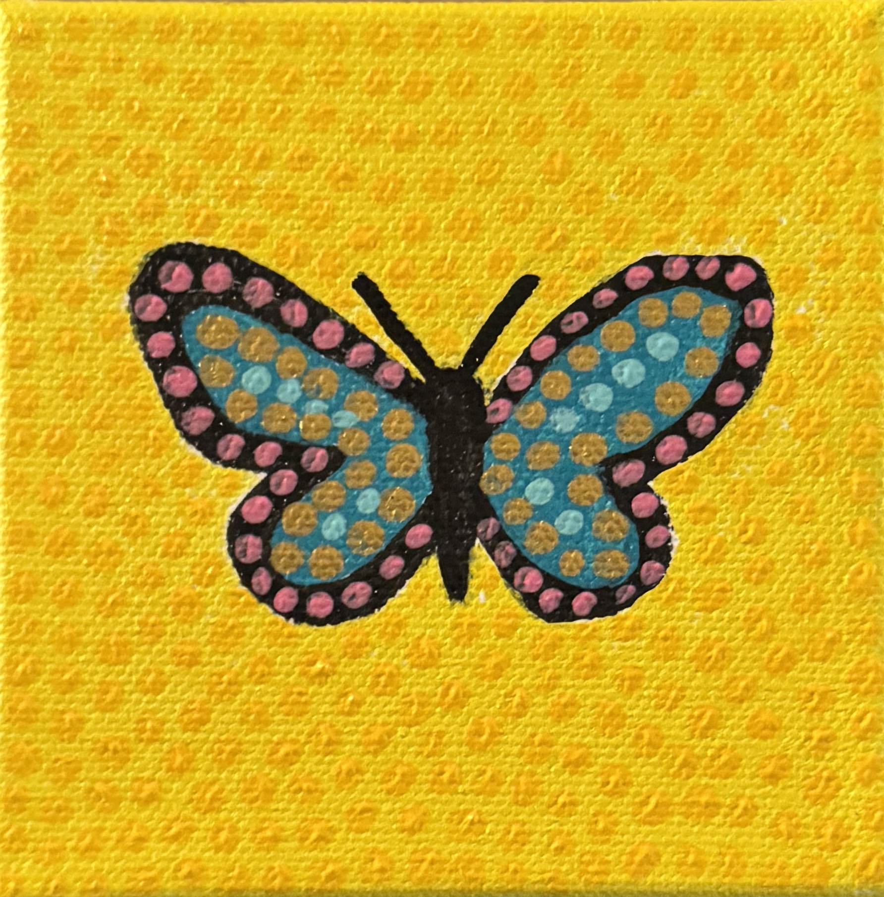

West Texas soul — brought to life on canvas

Jennifer Williams
Jennifer Williams is a Texas-based fine artist whose vivid, joyful works are inspired by the natural world and a deep emotional connection to the land she grew up on.
Born and raised in West Texas, Jennifer was surrounded by vast skies, rugged desert beauty, and the rich color of the high plains. That landscape lives in every brushstroke — in the warm golds, electric teals, and vibrant pinks that define her palette.
Her signature style draws on folk art traditions and pointillist dot-work, layering tiny marks of color to build complex, shimmering surfaces. Animals, plants, and everyday creatures become celebrations — alive with pattern and light.
Jennifer works closely with collectors and art lovers to create something entirely your own — from pet portraits to landscape interpretations.
Start a Conversation